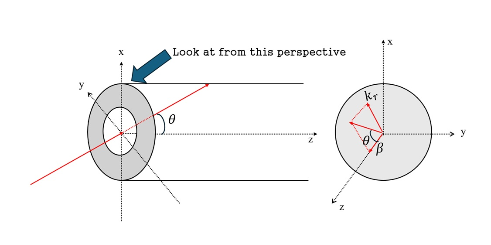

TE mode and Bessel functions#

1. Coordinate System and Wave Vector#
Consider cylindrical coordinates
where
\(z\): axis of the waveguide
\(r\): radial distance from the axis
\(\phi\): azimuthal angle in the transverse plane
For a wave propagating along the \(z\) direction inside a waveguide, the wave vector can be decomposed into axial and transverse components:
For a cylindrically symmetric discussion, the magnitude of the transverse wave number is denoted by \(k_r\), and
where \(\theta\) is the angle between the wave vector \(\mathbf{k}\) and the \(z\) axis. Thus, \(\theta\) represents how strongly the wave is tilted relative to the waveguide axis.
2. Meaning of a TE Mode#
A TE (Transverse Electric) mode is defined by the condition
meaning that the electric field has no axial component.
However, this does not mean that the wave does not propagate along the \(z\) direction. The fields generally have a dependence of the form
and as long as \(\beta\neq 0\), the wave propagates along the axis.
Therefore, TE means that the electric field is entirely transverse, not that the propagation direction is transverse. In a circular waveguide, the remaining longitudinal component is typically \(H_z\), from which the transverse electric and magnetic fields are derived.
3. Intuition: Superposition of Reflected Plane Waves#
A waveguide mode can be intuitively understood as a superposition of plane-wave components that share the same axial propagation constant \(\beta\) but have different transverse directions.
For a single component,
and in a homogeneous medium,
Thus, the electric field must be perpendicular to \(\mathbf{k}\). In cylindrical coordinates, a field polarized along \(\hat\phi\) is orthogonal to both \(\hat r\) and \(\hat z\), making it a useful visualization of TE-like polarization.
When the wave reflects from the wall, the transverse component changes sign,
while \(\beta\) remains unchanged. In a one-dimensional analogy,
The superposition of \(\pm k_r\) components therefore produces a standing-wave structure in the transverse direction.
In this sense,
That is, there is no net transverse momentum flow, but a transverse spatial scale remains, producing a transverse mode structure.
Strictly speaking, however, the radial dependence in a circular waveguide is not \(\cos(k_r r)\) but a Bessel function \(J_l(k_r r)\).
4. Cylindrical Symmetry and the Emergence of Bessel Functions#
For a plane-wave component whose transverse wave vector points in the azimuthal direction \(\psi\), the phase factor at an observation point \((r,\phi)\) is
Summing all such plane waves with equal weight over every direction gives
Using the integral representation of the Bessel function,
we obtain
Thus, a cylindrically symmetric superposition of plane waves naturally produces the radial profile \(J_0\).
To generate an azimuthal mode of order \(l\), we assign an azimuth-dependent phase weight
to each plane-wave component. Then
This follows directly from the Jacobi–Anger expansion,
showing that a superposition of plane waves generates the cylindrical wave
5. General Form of TE Modes in a Circular Waveguide#
For a circular waveguide, TE modes satisfy
and the longitudinal magnetic field is the fundamental quantity.
In general,
Using a complex representation,
Here, \(k_c\) is the transverse eigenvalue determined by the boundary conditions.
For a perfectly conducting wall at \(r=a\), the tangential electric field must vanish, leading to
Therefore, the TE eigenvalues are determined by the zeros of the derivative of the Bessel function rather than by the zeros of the Bessel function itself.
The dominant mode of a circular waveguide, i.e., the mode with the lowest cutoff frequency, is \(TE_{11}\).
6. Why Does \(E_\phi\propto J_1\) Appear in \(TE_{0m}\)?#
For an axisymmetric TE mode, \(l=0\), so
The transverse electric field is obtained from Maxwell’s equations. In the axisymmetric case,
Hence,
Using
we obtain
Therefore, although the longitudinal magnetic field has a \(J_0\) profile, the transverse electric field follows a \(J_1\) profile.
7. Meaning of the Azimuthal Index \(l\)#
In the complex representation
the integer \(l\) is the azimuthal mode number.
\(l=0\): no azimuthal dependence.
\(l=1\): the phase changes by \(2\pi\) after one full revolution.
\(l=2\): the phase changes by \(4\pi\) after one full revolution.
In this sense, \(l\) corresponds to the phase winding number in the complex representation.
However, conventional circular-waveguide TE and TM modes are often written using real-valued functions,
so the most precise interpretation of \(l\) is that it is the azimuthal mode number describing the angular dependence of the mode.
It does not represent polarization direction.
8. Summary#
Circular-waveguide TE modes satisfy
Their transverse structure can be understood as a superposition of plane-wave components. Owing to cylindrical symmetry, the radial dependence is described by Bessel functions \(J_l\).
An equal-weight superposition over all azimuthal directions produces \(J_0\), while introducing a phase weight \(e^{il\psi}\) generates the cylindrical mode
For \(TE_{0m}\),
and the corresponding transverse electric field becomes
Thus, the index \(l\) characterizes the azimuthal dependence of the mode rather than its polarization.